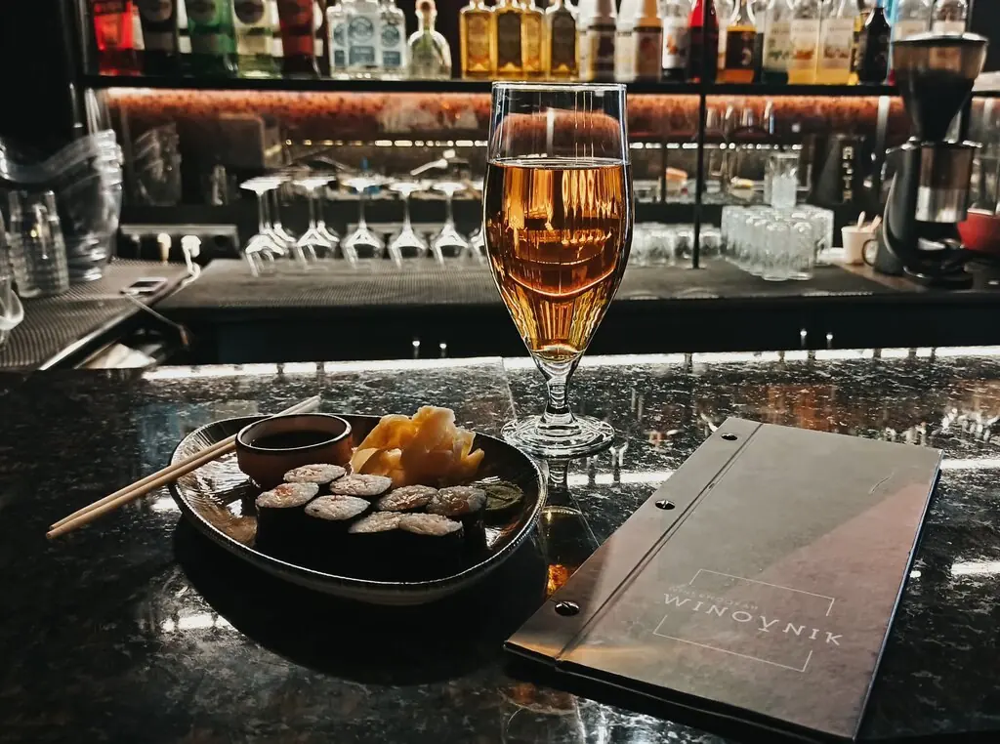
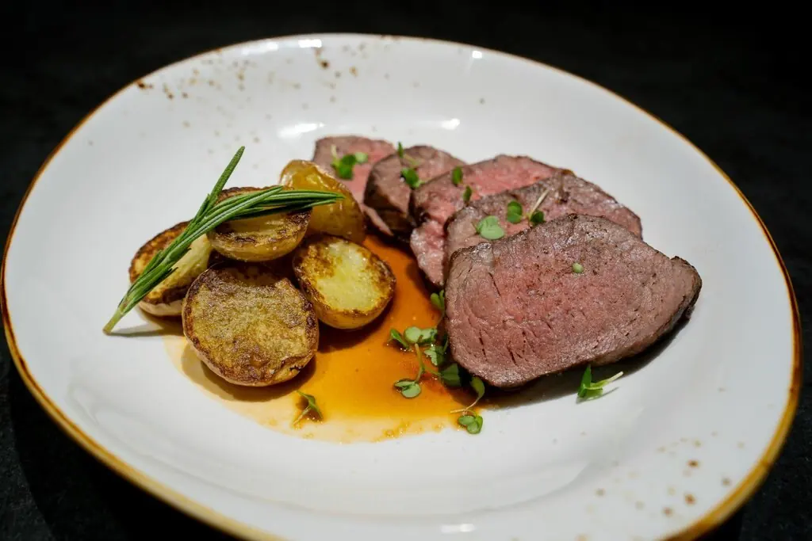
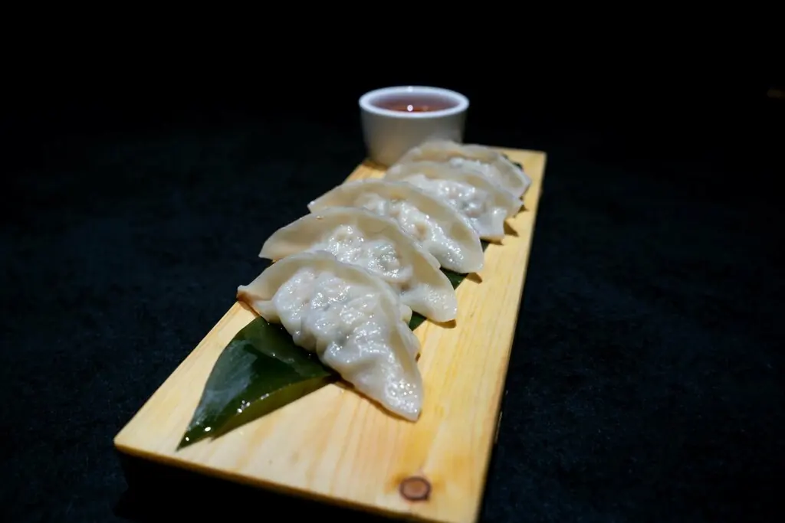
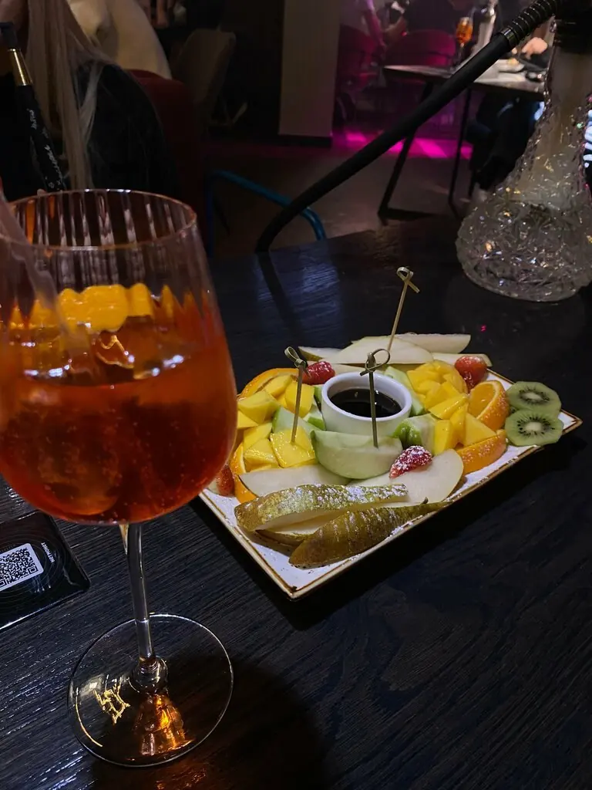
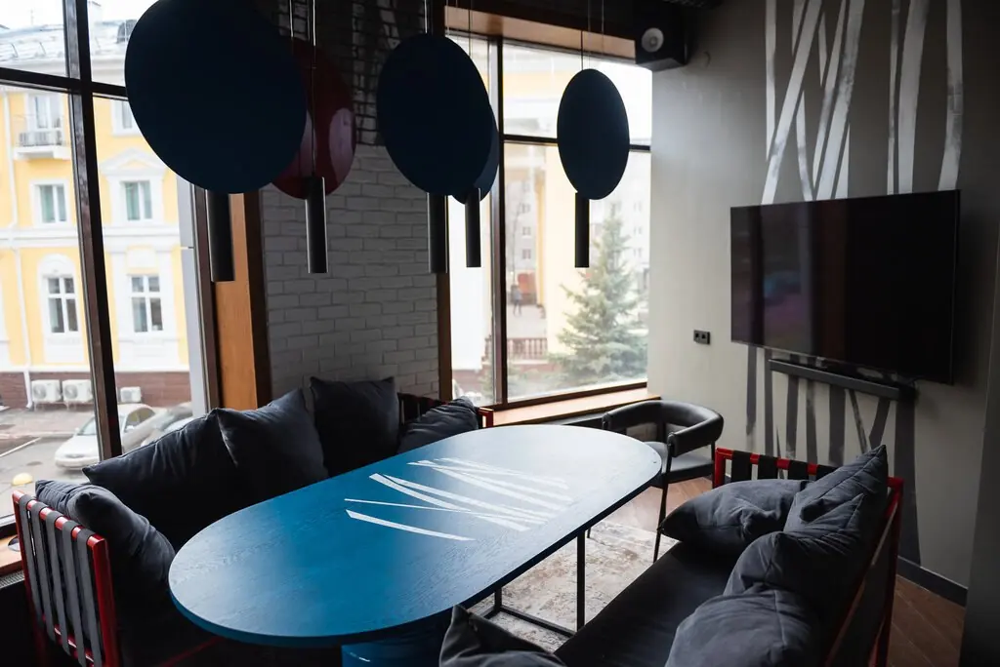

ДЕЛО № 14 · Советская улица · Ижевск+7 982 117-67-66
Виновник
Обвиняется в том, что посетители задерживаются до двух ночи. Свидетели подтверждают коктейли, кальяны и живого исполнителя.
Рейтинг 5,0 · 350 показаний

Вещественные доказательства




Перечень статей
ст. 1Брускетта со страчателлой и лососем855 ₽
ст. 2Соте из голубых мидий с блю чиз1 155 ₽
ст. 3Том ям с морепродуктами985 ₽
ст. 4Тыквенный крем-суп с лососемпо меню
ст. 5Поке с креветками625 ₽
ст. 6Тапас к бокалу вина415 ₽
Часть меню из 2ГИС, цены уточняйте у официанта.
Показания
Интересные коктейли, каждый подберёт под свой вкус. Лёша делает вкусные кальяны.Городской житель
Мы в восторге от сервиса, кальяна, исполнителя. Обязательно вернёмся ещё!Гость
Хороший сервис, внимательный человек, просто душка.Гость
Срок: до двух ночи
Ижевск, Советская улица, 14Пн–чт 11:00–01:00, пт 11:00–02:00, сб 12:00–02:00, вс 12:00–01:00+7 982 117-67-66